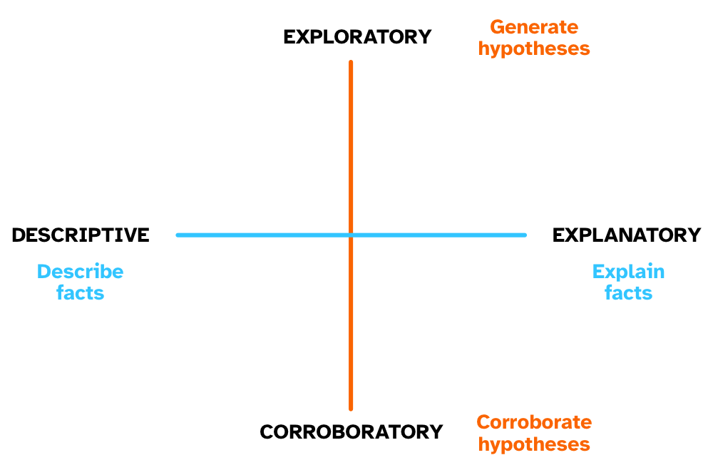
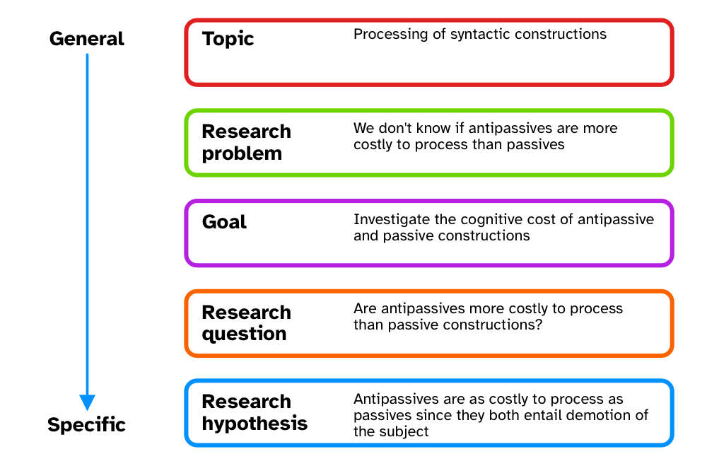

Empirical research
Empirical research is one approach to research. This type of research focusses on learning about the Universe through data and observation.
The word empirical is related to experience, and in the context of research it basically means “based on experience (i.e. data and observation)”.
Lear more about the etymology of empirical here.
Axes of research

There are two main “axes” of empirical research types:
Exploratory research is about exploring the data looking for patterns, associations, features and so on. This type of research is also known as “hypothesis generating” because exploration can lead to the formulation of new hypotheses.
Corroboratory research (aka as confirmatory research) is about checking expectations against data. It is also known as “hypothesis testing” because it is about testing hypotheses using data.
While there is still a lot of prejudice against exploratory research (typical sentiments are “it doesn’t have theory”) it is an important way of doing research, as recognised by important scholars like Tukey. In We need both Exploratory and Confirmatory, Tukey stressed the importance of both approaches to research.
Descriptive research is about describing facts through observation and collection of data. In other words, descriptive research is about the what.
Explanatory research is about explaining facts, i.e. understanding why they are the way they are. In other words, explanatory research is about the why.
Research objectives
There can be three types of research objectives. Each has its merits and to improve our understanding of the Universe we need all three, although there is nothing wrong for any one study to focus just on one or two!
Research can establish facts and fill a gap in the knowledge of one or more phenomena.
The aim of establishing facts is to accumulate evidence of particular events, features, associations.
Examples:
- What are the uses of the Sanskrit verb gam ‘to go’?
- What is the duration of vowels in Mawayana (Arawakan)?
- Do people interact with AI as with other people?
Research can improve the fit of a specific framework to established facts. Usually this is done to fine-tune a framework in light of new evidence but it also just works when you want to test new expectations/hypotheses. When the facts do not match the expectations, researchers modify the framework to accommodate the results.
In some cases, a framework can be totally abandoned in light of the facts, or a new one could be developed.
Examples:
- Strong exemplar-based models preclude the possibility of abstract representations, but certain categorisation tasks seem to involve abstract representations so these must be included in exemplar-based models.
This objective allows researcher two compare two or more frameworks in light of empirical results. The main prerequisite for this approach is that each framework must have different expectations in relation to the phenomenon at hand.
When different frameworks entail different and exclusive hypotheses, one can test the hypotheses with data: the results might help excluding certain hypotheses and keep others. The frameworks that generate the excluded hypotheses have to be abandoned (unless they can be modified to fit the new results, see above, while still be different enough from other frameworks).
Examples:
- There are two possible models for the bilingual lexicon: Word association and concept mediation. Which one better describes and explains the data?
- A strict feed-forward architecture of grammar does not allow phonetic details to be sensitive to morphological structure, while some exemplar-based models allow that.
Each of the three objectives are important in research, but note that in order to really advance our understanding of things the third objective is fundamental: it is only by directly comparing different frameworks that we can accumulate knowledge and weed out inaccurate explanations.
Research context
Ellis and Levy (2008) introduce a nice break-down of the concept of “research context”.
The image below is a schematic representation of different aspects of the research context, from the most general to the most specific. An example of each is also provided.
